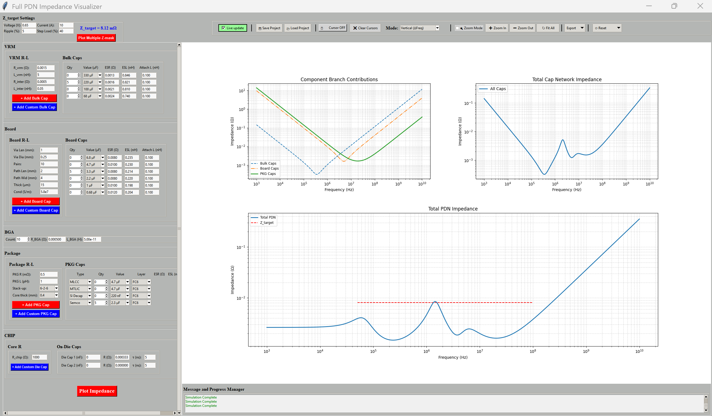
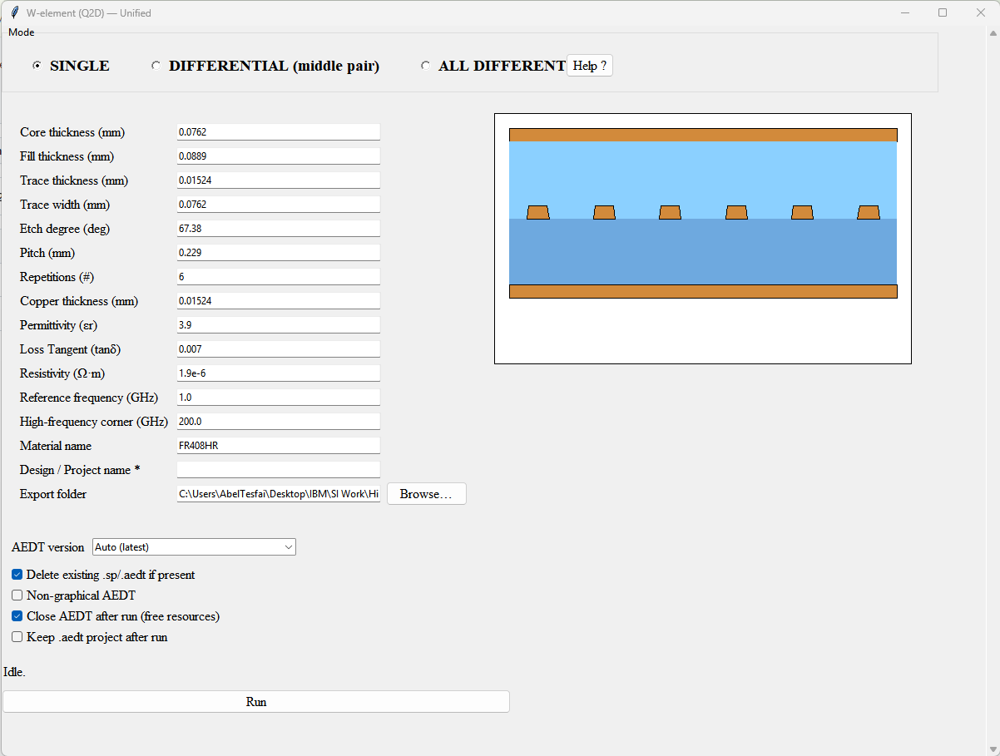
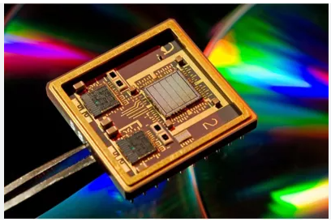
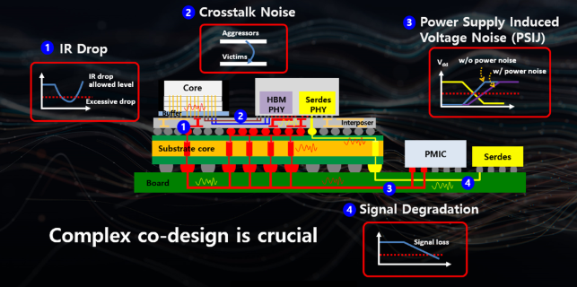
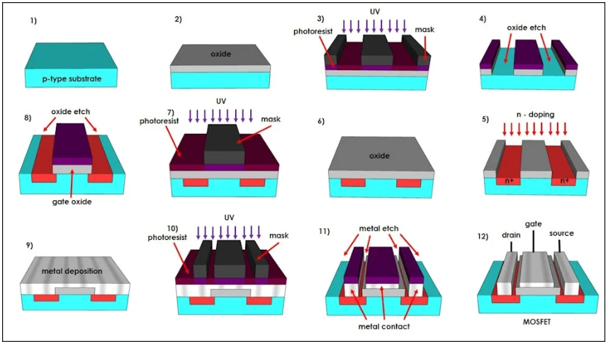

A curated set of hands‑on projects spanning PDN modeling, decoupling optimization, high‑speed channel extraction,
automation utilities, and wafer‑level fabrication. All examples are presented at a high level with non‑proprietary visuals.
PDN & Z‑maskDDRx SIEDA AutomationCleanroom

Tooling • Python/Tkinter • Matplotlib
Filter:
Full PDN Impedance Visualizer
A desktop application that models VRM→board→package→die impedance, visualizes component branch contributions, and overlays Z‑masks for target compliance. Supports cap type libraries (MLCC/MTLIC/on‑die), BGA aggregation, and export to CSV/S‑parameters/SPICE.
Parametric sweeps & Z‑target computation
PKG, board, and on‑die decap modeling with attach inductance
PDF reporting and multi‑format exports
Cursor/zoom tools for rapid design review
PythonTkinterNumPyMatplotlib

W‑Element (Q2D) Extraction GUI
An automation layer for 2D field extraction that builds stackups, draws geometry, runs sweeps, and exports distributed transmission line models. Designed for rapid iteration during DDRx channel design and SI correlation.
Single‑ended & differential modes with etch compensation
Material/loss parameterization with frequency corners
Utility scripts that generate stitched‑via fences, anti‑pad clearances, and cavity patterns consistent with PDN targets and return‑path integrity. Built to reduce manual layout work and enforce PI/SI rules at scale.
Rule‑driven pattern synthesis
Automated export for downstream layout tools
Hooks for impedance and resonance checks
Batch operations for multi‑net application
PythonPyAEDTAlgorithms

End‑to‑End DDRx DIMM SI Flow (High‑Level)
A reusable workflow for DIMM channel design: topology planning, loss/dispersion modeling, W‑element extraction, overshoot/undershoot analysis, and eye/BER evaluation. Includes guardrails for simultaneous switching and power‑aware SI.
Constraint‑driven routing & via transitions
Cross‑checks against PDN impedance and SSN
Model handoff and documentation templates
Correlation checkpoints (time/frequency domain)
SI MethodologyModels & Correlation

Package PI & SI Design (High‑Level Summary)
Worked on high‑performance BGA packages focusing on decoupling strategy, plane resonance mitigation, and low‑inductance attach. Activities included target‑impedance budgeting, cap type selection, layer‑by‑layer placement tradeoffs, and risk‑reduction experiments. Details are generalized to respect confidentiality.
Cap portfolio planning (on‑die / in‑package / on‑board)
Attach‑path optimization and current return control
Anti‑resonance management and damping approaches
Documentation for design reviews & sign‑off

Wafer Microfabrication Lab
Hands‑on cleanroom process run: mask alignment, photolithography, thermal steps, BOE etch, and inspection. Final packaged sample was probed and tested to validate feature fidelity and process windows.
Class‑100/1000 cleanroom protocols
Wet bench safety & chemical handling
Metrology & microscopy for QA
Electrical test & documentation
SysTrack – Linux Server Monitoring Toolkit
Python toolkit for real‑time telemetry (temp/memory/process) with multithreaded collectors and lightweight microservices. Useful for running longer EDA jobs and capturing performance bottlenecks.